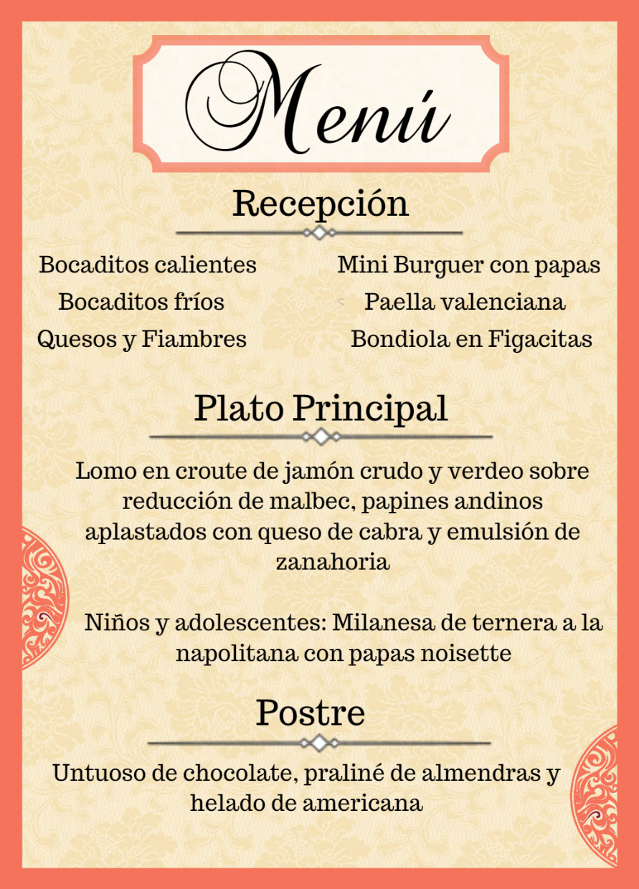

<!--
  Generated template for the ComidaPage page.

  See http://ionicframework.com/docs/components/#navigation for more info on
  Ionic pages and navigation.
-->
<ion-content padding class="bg">
        <ion-grid >
            <ion-row>
                <ion-col col-12>
                    
                </ion-col>
              </ion-row>
          <ion-row class="abajo">
            <ion-col col-2>

            </ion-col>
            <ion-col col-6 class="bg-sendMessage">
             <h5 style="color:black">Si tenés alguna dieta especial (celíaca, vegetariana, vegana...) apreta el sobrecito para hacérnoslo saber...!</h5>
            </ion-col>
            <ion-col col-4>
                
            </ion-col>
          </ion-row>
        </ion-grid>
        <ion-fab left bottom>
          <button ion-fab navPop class="botones"><ion-icon name="arrow-back"></ion-icon></button>
        </ion-fab>
</ion-content>
